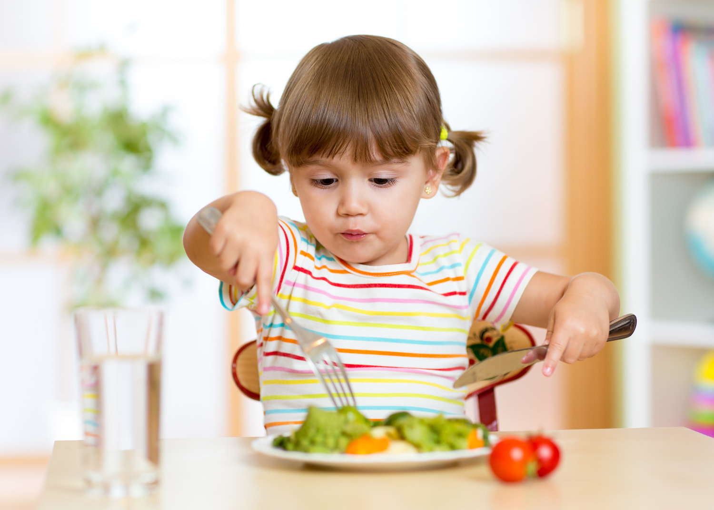

Home Children Teens Adults Olders About
TODDLERS
Toddler Diet and Nutrition for Brain Devlopment and Overall Child Devlopment
At this point, transitioning into solids is probably a key milestone for your toddler.Giving your toddler the right kinds of foods that enhance their growth is important.Here are some foods that should be a part of their daily diet and nutrition chart.

1.Iron:A growing brain needs enough iron to help the neurons.Found in foods like pomegranate,papaya,spinach and brocoli,these should be the part of the everyday diet for toddlers.
2.Protien:Growing children need protien.Thesevare found in dairy,eggs,lentiles and can be mushed given in small amounts so that it does not cause an upset stomach for your toddler.
3.Vitamin C:A great way to build up immunity system for your toddler,these can be found in various fruits like oranges,lemons and sweet limes.
4.Calcium:Definitely a must for those little hands and legs ,these are found in milk,paneer,cheeses andcurd.Given in small and frequent amounts,they
can be a great way for your toddler to built bones.
A well food platter for you toddler can enhance your toddler's health